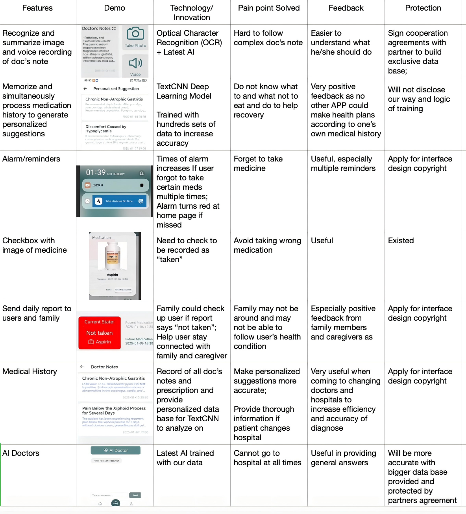
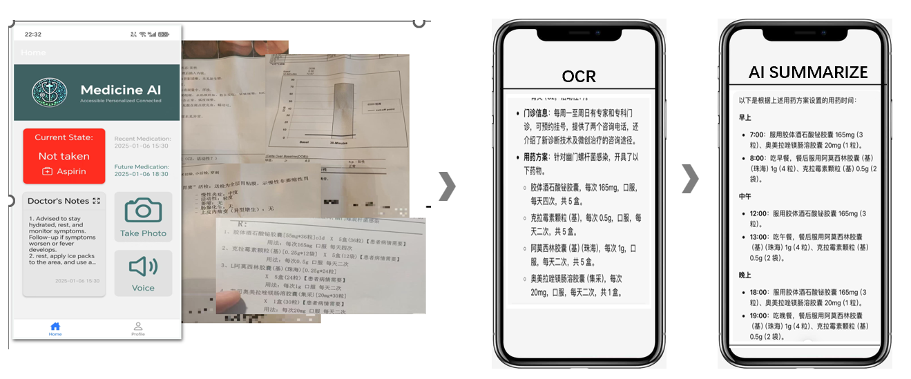
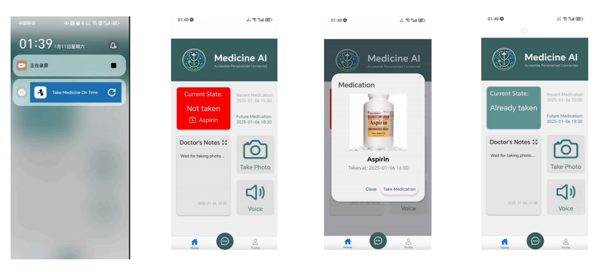
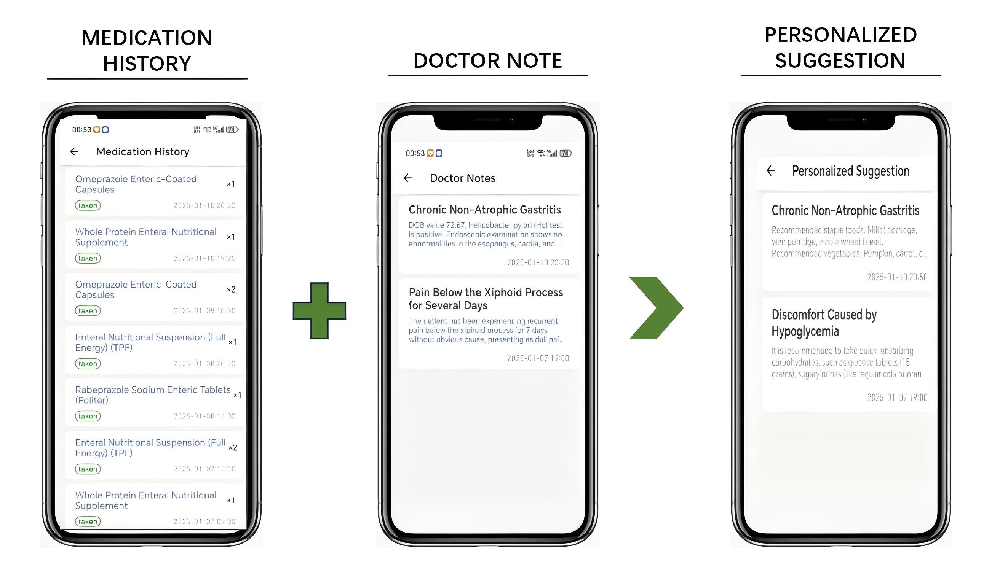

MEDICINE AI - Business Plan Project Report
Team Sea Dragon

1. Elevator Pitch
Aging Population has created an increasing need for daily health related care. Medicine AI is an AI-powered app designed for the elderly and chronic disease patients who need continuous medical care. It can recognize and summarize doctor's notes, and set reminders with alarms and pill images accordingly to prevent confusion.
The app also generates health recommendations with deep learning model based on the patient’s historical medical cases and sends daily reports to users and their family members. The primary users are the elderly who may suffer from cognitive decline and poor memory, as well as their family members and caregivers.
With the aging population, Medicine AI has significant business potential. In China, the 60+ population is 20% and expected to rise to 30% by 2033. Globally, it's projected to reach 2.1 billion. Revenue streams include annual membership fees and collaborations with hospitals and healthcare institutions.
2. Team Member
We are a well-rounded team with James as a experienced team leader, science orientated Steven and Tony, and Fred and Ricky strong in economic and business.
Our team member
| Role | Person | Professional Field/Strength | Responsibility |
|---|---|---|---|
| Leader & project manager | James | Well-rounded | Overall project management |
| Backend technical | Steven | Future scientist | Technical development |
| Technical/Content | Tony | Computer science & photography, Passionate about video | Video related work |
| BP manager | Fred | Economic and business | Business plan formulation |
| BP manager | Ricky | Economic and business | Business plan formulation |
The impetus for this project stems from the shared lived experiences of our project team: each member has beloved grandparents in their family, and these elders face persistent challenges in managing chronic illnesses in their daily lives. Chronic disease treatment is a long-term process that requires consistent medication adherence, personalized dietary adjustments, and regular moderate exercise to improve physical health. Recognizing these common struggles faced by our beloved grandparents and elderly chronic disease patients overall, our team resolved to develop an APP to provide the elderly with daily medication reminders, lifestyle guidance, and rehabilitation support.
3. Opportunity
Our AI-based personal medical assistant addresses several pain points in health management:
- Due to the decline in memory among the elderly, it becomes difficult to remember doctors' instructions, as well as the methods, requirements and time for taking multiple medications.
- Due to the complexity of medical terminology and the professionalism of medical knowledge, many people find it hard to understand medical terms and test indicators, leading to anxiety and mis-using medicine.
- In the process of recovery or long-term medical care, dietary and habit are essential for improvements. Many people need constant professional and personalized advices.
Research shows that the medication non-adherence rate due to mistaking medicine among the elderly is as high as 50%, leading about 125,000 preventable deaths and $10 billion in medical expenses. In the United States alone, there are tens of billions of dollars in avoidable medical expenses due to the above reasons each year.
We solve this problem through its "alarm" function, which is automatically set according to the doctor's instructions; it can identify and timely remind users, and provide a checkbox for users to tick after completing the task. To ensure that customers take the correct medication and dosage, pictures of the prescribed drugs issued by the doctor will pop up with the alarm.
Elderly may lack knowledge and learning ability to acquire information on health management, hence, our application provide smart personalized suggestions according one’s situation. In addition, many elderly people may live alone in another city or even in the children's homes in other countries. Their children may not be able to track their health status, thus missing important signals. Our application links each account to two other family members or caregivers and sends daily reports.
4. Key Metrics
4.1 Design and Innovation

Technological Design
-
Combining OCR Technology with the Latest AI:
Through this design, we provide more convenient intelligent services for users. The application uses Optical Character Recognition (OCR) technology to extract and organize key information from multiple images, such as diagnoses, symptoms, and prescriptions, and then upload the organized information to AI for analysis. Currently, AI mainly analyzes information from a single uploaded image. Through our design, it can process multiple images and form a single document, hence, analyze the content of multiple images simultaneously, making results coming from our AI analysis more accurate, helping patients get a more comprehensive analysis and answer.

-
Intelligent Generation of Medication Reminders:
By analyzing patients' medical information, it can intelligently analyze patients' medication schedule, generate reminders, and confirm with patients for completion.

-
Personalized Dietary Recommendations and Rehabilitation Suggestions:
To meet nutritional needs and promote health improvements, we use a TextCNN deep learning model to analyze the health data, such as medication history and past lifestyle, provided by users and generate personalized suggestions suitable for current medication situation with doctor’s notes and prescription. This includes dietary adjustments, exercise methods, and other personalized health strategy suggestions.

-
Combination of AI and Human Services:
To further ensure the quality of service, we have established a proprietary knowledge base. When AI encounters complex or unsolvable situations, these professionals will provide insights, and we will integrate these professional insights into our knowledge base, gradually improving the professionalism of our product.
With the above AI backed features, we believe we could solve all the pain points we identified effectively:
- AI backed alarm with photo of pills can effectively solve the problem of the elderly not remembering the functions and requirements of medicines
- Image and voice recognition and summarization resolve the confusion brought by professional medical terms
- AI can provide relatively professional, more importantly, personalized dietary recommendations and rehabilitation recommendations.
Through our design combined with AI, OCR technology and TextCNN deep learning model, we can more conveniently and professionally solve these problems.
4.2 Potential Impact
The innovative market impact of this product is both quantitative and qualitative.
Quantitative Perspective: Globally, the aging population is putting significant pressure on society and the younger generation. For example, in 2023, the U.S. Census Bureau predicted that by 2034, the population aged 65 and above will exceed children under 18. This tension on care resources is significant, with families and healthcare providers seeking cost-effective solutions. Our application can effectively reduce care pressure and improve adherence to medication treatment plans. Moreover, a study published in the Journal of Geriatric Care showed that the use of monitoring tools reduced medical costs related to chronic diseases by 15%.
Qualitative Perspective: The application improves the lives of the elderly by promoting their independent management and life quality. Families also benefit from the reduced care burden, as the application addresses issues in the traditional medical system. Its emphasis on preventive care further supports public health goals by reducing the incidence of preventable diseases. For example, improved management of diabetes and hypertension can reduce complications, thereby alleviating the economic pressure on the medical system.
From the above perspectives, we believe that our product has a significant potential impact.
4.3 Product Protection Methods
From a product development perspective, we will not disclose our ideas and our proprietary knowledge base to protect our product. For our trade secrets, we sign cooperation agreements with our partners to protect our knowledge base legally. Moreover, we will apply for copyright for our interface design. These measures establish the application's leading innovative position in the field of medical care, enabling it to effectively meet the growing needs of the rapidly aging global population.
5. Validation/Progress
The Development and Validation of Our Application
During the development process, we constantly verified our ideas, using actual patient cases and treatment processes to check the accuracy of the program. We have already received positive results after training our AI with over 500 hundreds sets of data with 185 sets coming from a single patient. We believe bigger data base would result in more accurate results.
The OCR system showed high precision in extracting key information from various medical documents. By accurately capturing data such as diagnoses and treatments, this technology laid the foundation for the AI's information processing capabilities.
The TextCNN deep learning model also proved effective in preliminary tests, identifying diseases and generating thoughtful and authentic insights with high precision. These advancements ensure that the application provides reliable diagnostic support for elderly users.
Additionally, we used PyQt5 to design a user-friendly interface. In preliminary tests, elderly participants provided valuable feedback, emphasizing the application's ease of use. Users appreciated its simple instructions and clear explanations. later, we add voice commands.
Innovation Progress
To achieve more accurate results, the AI model needs to be trained on a larger scale of data and to better improve its proprietary database. Therefore, our team establishes cooperation with hospitals and medical professionals to continuously verify the application in real-life scenarios, ensuring its reliability and practicality.
Up to now, our team has started to work with LiangAn Yijia, a famous agent cooperation connecting doctors and hospitals in and out of China. With consent, we were able to gain a 5-yearlong medical record on a single patient who suffer from long-term stomach diseases. We applied our AI system to process and organize the patient’s medical records and trained AI with 185 sets of data from him.
Our AI algorithm summarized the key information of the patient's condition and intelligently analyzed the causes of the illness, and suggested appropriated medication schedule and dietary. After switching to a new doctor, the doctor used the key content summarized by our application’s AI system, combined with the patient's specific situation, to formulate a brandnew treatment plan for the patient while confirmed the dietary suggestion that our APP generated.
According to this new treatment plan, the patient's condition began to gradually improve, and successfully avoided the originally possible gastric resection surgery. This case is a great encouragement for us, proving the practicality and effectiveness of our AI system as well as our training logic.
6. Market
Our application is primarily aimed at the elderly, their family members and caregivers. It is also very helpful to all-age patients with chronic diseases.
- For Patients Themselves: Forgetting to take medication or having unhealthy dietary habits often worsens the condition, causing them to fall into a more serious illness, which not only increases the patients' medical consumption and emotional anxiety, but also increases the social medical burden.
- For Caregivers and family members: They often lack medical knowledge and are unable to provide sufficient support, making the family atmosphere tense.
- For Medical Service Providers: The application can effectively improve follow-up care and reduce patient readmissions to supplement their services.
The global aging population brings significant market opportunities. For example, in China, it is expected that by 2050, the population aged 65 and above will exceed 300 million, and the elderly population in the United States will grow to nearly 80 million by 2040. With the aging population, the demand for convenient and affordable medical solutions is increasing. Our application provides a cost-effective and innovative tool for health management, bridging the gap between professional medical services and individual needs.
The primary buyers of the application are users themselves - mainly elderly who usually suffer multiple long-term diseases. While some elderly may lack the ability to use smart electronic devices, their caretakers use the APP to better assist them. This could constitute similar size of market with elderly themselves.
Our next step would be working with doctor agents like LiangAn Yijia, hospitals and insurance companies. For example, insurance companies can integrate this application into their packages, promoting preventive care to reduce claims. We predict this market would be even larger as this include not only elderly, but most of their customers as well.
7. Competition
7.1: Competition Analysis
Our competition are the reminder applications. We have chosen several topranked/scored applications for competitive analysis. Existing applications usually have features including alarm with checkbox, picture of doctor’s note, medication history. A few include sending report to family, but only once per month. All these applications lack advanced AI functions, image and voice recognition and summarization, led long subsequent personalized health suggestions according to the medical history.
| Features | iCare | MediMemo | Pill Reminder | DingNing | Medicine AI |
|---|---|---|---|---|---|
| Photo taking | √ | √ | × | × | √ |
| Photo recognition and summarization | × | × | × | × | √ |
| Alarm with meds’ photo | √ | √ | √ | √ | √ |
| Checkbox for completion | √ | √ | √ | √ | √ |
| Report | Per month | Per month | × | × | Per day |
| Medical History | × | × | × | × | √ |
| Personalized advices | × | × | × | × | √ |
| Note taking of users daily feeling | × | × | × | × | √ |
7.2. Advantage
The main advantages of our AI medical reminder system are:
-
Advanced Technology and Knowledge
- Combine cutting-edge AI and medical expertise.
- Strong data processing and self-optimization via deep learning.
- Enhances precision and efficiency.
- Precision already tested by professional doctors in real case scenario
-
Personalized Services
- Provides basic medication reminders.
- Tailors dietary and health management suggestions based on personalized health status and medical history.
- Gains widespread user praise and recognition.
-
Industry Collaboration
- Have reached out to professional doctors, hospitals and agents
- Actively incorporates latest medical research and tech.
- Improved data base collaborating with professionals
- Strives to be a AI based service-oriented system for the public, ensuring convenient and efficient healthcare.
7.3. Disadvantage
The main disadvantages of our MedicineAI system are:
- AI related laws not well established: may lead to legal and ethical disputes
- Need better data protection in order for users to use our APP without worrying about data leak
- We believe with the development of AI and smart medial systems, regulations and data security would enhance.
8. Go to Market
-
Social Media Platforms:
E.g: Advertising on TikTok, YouTube, Bilibili etc.: targeted Age Range: 24-50, including users and family members purchasing for elderly users.
-
Community Outreach: Targeted Age: >50
- Partnerships: Collaborate with hospitals, nursing homes, and convalescent homes to build trust and adoption.
- Health Fairs: Participate in health expos with experience booths. The RMB 50,000 allocated for elderly community advertising can cover multiple events.
- APP store: Can be searched on APP store using key word
9. Cost Revenue Analysis
Main Revenue Streams
-
Personal Membership Fees
- Basic: Free, with basic medication reminders.
- Premium: Paid, with AI personalized suggestions and AI doctor features. $9.9 or RMB 70/month.
-
After establishing cooperation with hospitals and insurance company
- With insurance packages, generating revenue from these partnerships.
- Open Premium Plus with features of real-time doctor/ making doctor appointments
Main Costs
- App Store Fees: RMB 2000/year.
- Advertisement on social media: Budgeted at RMB 100,000/ year or $14,000. ( TikTok's CPM starting at $10 and YouTube's CPV ranging from $0.010 to $0.030)
- Server and Cloud Infrastructure: RMB 500/month, with monitoring and optimization as the user base grows.
- Hosting and Maintenance: RMB 700/month.
- Employee Salaries: First year cost including two AI engineers, a customer service person, and a manager. Setting up at a lower living cost city, the cost could be constrained to 400,000 RMB.
- Marketing and Promotion Costs: 15,000 RMB/month
- Legal and Compliance Costs: 5,000 RMB/month.
- Other Operating Costs: we can work at co-work area or at home as it’s mainly online at this stage.
Per-unit cost and Pricing
The calculated first year per month cost would be around 70000 RMB We could price according to average price: $9.9 or RMB 70/month. This would need 1,000 member per month to cover cost. Given our large potential customer base and reliance created by the APP, 1,000 paid member per month is relatively easy to achieve.
10. Fundraising
Initial Startup Funds: RMB 700,000
- Product Development: RMB 400,000 for recruiting a professional team.
- Marketing and Sales: RMB 150,000 for establishing brand presence and targeted advertising.
- Business Expenses: RMB 50,000 for administrative, infrastructure, and customer service support.
- Regulations and Legal: RMB 100,000 for ensuring platform compliance and obtaining approvals.
Funding Sources
- Angel Investors: Sought for their expertise and strategic guidance in healthcare and AI. We would prefer the individual has medical or related industry background to help with our cooperation with hospitals and insurance companies in our next stage.
- Venture Capital: After we proved the advantage of our product and a working business model, we would seek for VC due to the large market potential. At this stage, we could expect rapid growth of our size.
- Grants and Subsidies: Actively applying for government or healthcare organization support, with potential for significant grants under policies encouraging AI development and medical services.